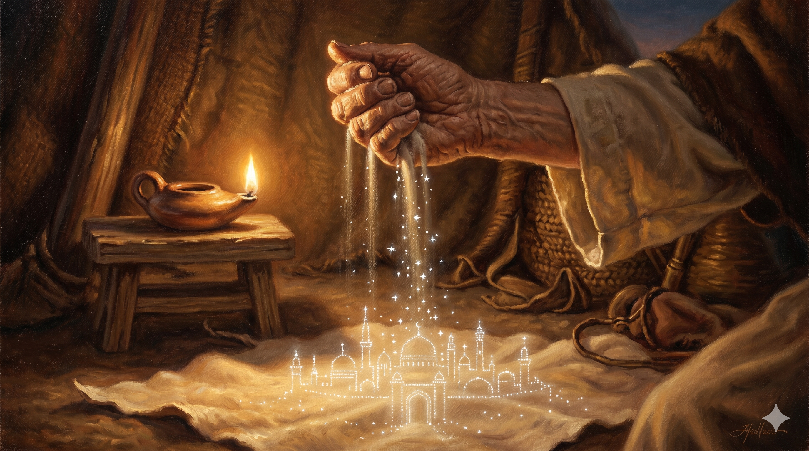

해 질 녘 가나안의 광야, 늙은 아브라함이 검소한 베두인 천막 앞에 홀로 서 있다. 그의 눈은 지평선 너머 — 결코 자기 발로 닿지 못할 먼 도성을 향해 있다. 하늘 끝에는 황금빛으로 빛나는 거룩한 도성의 윤곽이 신기루처럼 떠오르고, 천막의 기둥에는 새겨질 듯 말 듯 한 글자가 보인다. "나그네." 그러나 그 얼굴에는 슬픔이 아니라 깊은 안도가 흐른다.
믿음으로 아브라함은 부르심을 받았을 때에 순종하여 장래의 유업으로 받을 땅에 나아갈새 갈 바를 알지 못하고 나아갔으며 … 믿음으로 그가 이방의 땅에 있는 것 같이 약속의 땅에 거류하여 동일한 약속을 유업으로 함께 받은 이삭 및 야곱과 더불어 장막에 거하였으니 이는 그가 하나님이 계획하시고 지으실 터가 있는 성을 바랐음이라 … 이 사람들은 다 믿음을 따라 죽었으며 약속을 받지 못하였으되 그것들을 멀리서 보고 환영하며 또 땅에서는 외국인과 나그네로라 증언하였으니 — 히브리서 11:8–13
히브리서의 저자가 아브라함의 일생을 한 줄로 요약했을 때, 그가 고른 단어는 "장막"이었습니다. 가나안 땅에 백 년을 살면서도 아브라함이 결코 짓지 않은 것이 두 가지 있었습니다 — 성벽과 집. 그가 가졌던 유일한 부동산은 사라를 묻기 위해 은 사백 세겔을 주고 산 막벨라의 동굴 한 자리뿐이었습니다(창 23장). 다시 말해, 약속을 받은 그 땅 위에서 그는 평생을 "천막을 치고, 옮기고, 또 천막을 치며" 살았습니다. 이방의 땅에 사는 사람처럼 살았다는 뜻이 아닙니다. 약속의 땅 한복판에 살면서도 — "이 땅이 내 본향이 아니다"라는 자의식을 내려놓지 않았다는 뜻입니다. 가장 큰 약속을 받은 사람이, 가장 가벼운 짐을 지고 살았다는 이 역설이야말로 아브라함의 평생을 관통하는 한 줄의 표제입니다.
왜 그가 정착하지 않았는지에 대해 히브리서는 단호하게 답합니다. "이는 그가 하나님이 계획하시고 지으실 터가 있는 성을 바랐음이라"(히 11:10). 아브라함이 보고 있던 것은 가나안의 도성이 아니었습니다. 그는 자기 발로 닿을 수 있는 어떤 도시도 자기 본향으로 받아들이지 않았습니다. 그의 눈은 늘 한 도성을 향해 있었습니다 — 사람이 짓지 않고 하나님이 친히 설계하시고 친히 세우시는 도성. 그래서 그의 천막은 단순한 임시 거처가 아니라, 보이지 않는 도성을 향한 일생의 신앙고백이었습니다. 천막의 말뚝을 박는 그 망치 소리 한 번 한 번이 "이곳도 내 본향이 아니다"라는 묵상이었고, 천막을 거두는 그 손길 한 번 한 번이 "내 본향은 더 좋은 곳에 있다"라는 고백이었습니다. 그는 약속을 받았으나 약속의 성취를 자기 손에 거머쥐려 하지 않았습니다. 멀리서 보고, 환영하며, 그곳을 향해 한 걸음씩 걸어갔을 뿐입니다.

아브라함의 천막 안 작은 등불 곁, 펼쳐진 양가죽 위에 한 노인의 손이 모래를 한 줌 쥐었다 흘려보낸다. 모래는 떨어지면서 별이 되고, 별은 다시 한 도성의 윤곽으로 모인다 — 보이지 않는 본향이 그의 손바닥 안에서 천천히 형체를 이루는 거룩한 환상.
우리는 정착하기 위해 평생을 애씁니다. 더 큰 집, 더 안정된 직장, 더 단단한 통장, 더 견고한 울타리 — 그것들이 우리에게 "나는 이제 여기서 안전하다"라는 한 마디를 들려주기를 바라며 살아갑니다. 그러나 아브라함은 그 모든 것을 손에 넣을 수 있었던 사람이었음에도, 평생을 천막에서 살았습니다. 자기에게 약속된 땅에서조차 "여행자"로 사는 일을 멈추지 않았습니다. 그는 무엇을 잃은 사람이 아니라, 무엇을 보았기에 그렇게 살 수 있었던 사람입니다. 오늘 당신이 가진 것이 임시 거처처럼 작아 보여도 괜찮습니다. 당신이 발 디딘 땅이 곧 당신의 마지막 정착지가 아니라는 것을 알 때, 도리어 당신의 손은 가벼워지고 당신의 마음은 자유로워집니다. 본향을 가진 자만이 이 세상에서 진정으로 가벼울 수 있습니다.
또 하나 — 히브리서는 아브라함이 "약속을 받지 못한 채" 죽었다고 분명히 말합니다(11:13). 그가 평생 기다린 그 본향에 그는 자기 발로 들어가지 못했습니다. 그러나 그는 멀리서 보았고, 환영했으며, "나는 이 땅의 외국인이며 나그네"라고 증언했습니다. 신앙은 약속을 손에 쥐는 데 있지 않고, 손에 쥐기 전에 마음으로 환영하는 데 있습니다. 당신의 기도가 응답되지 않았다고 해서, 당신의 믿음이 헛된 것은 아닙니다. 멀리서 보고, 환영하고, 그쪽으로 한 걸음을 떼는 일 — 그것이 이미 응답된 신앙입니다. 오늘 당신의 천막을 거두어 옮기는 그 작은 한 걸음이, 보이지 않는 도성을 향한 거룩한 행진입니다. 아브라함의 발자국이 사천 년 동안 닳지 않은 이유는, 그 발자국이 본향을 향해 나 있기 때문입니다.
당신이 사는 이 땅이 당신의 마지막 본향이 아닙니다.
가장 큰 약속을 받은 사람이, 가장 가벼운 짐을 지고 살아갑니다.
오늘, 손에 쥔 것 하나를 풀어 천막을 가볍게 하십시오 — 본향이 더 가까이 옵니다.